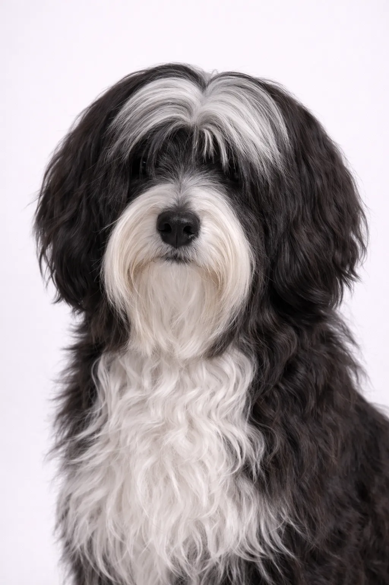

Tibetan Terrier
Despite its name, the Tibetan Terrier is not a terrier but a herding breed kept as good luck charms in Tibet.
14-17 in
18-31 lbs
Rasevurderinger
Temperament
Oversikt
Despite its name, the Tibetan Terrier is not a terrier but a herding breed kept as good luck charms in Tibet.
Temperament
The Tibetan Terrier is known for being affectionate, sensitive, clever. They're excellent with children and make wonderful family pets. Early socialization helps them develop into well-rounded companions.
Helse
Generally healthy with a lifespan of 15-16 år. Common concerns include joint problems and skin conditions. Regular veterinary checkups and preventive care are important. Maintaining a healthy weight helps prevent many health issues.
Mosjon
Moderate exercise needs with daily walks and regular play sessions. They enjoy a mix of physical activity and relaxation time. Interactive games and training sessions provide mental stimulation. A consistent exercise routine keeps them healthy and happy.
⦿ Passer Denne Rasen for Deg?
✓ Best For
- Families
- Apartment dwellers (with exercise)
- Those wanting a devoted companion
- Allergikere
✗ Ikke Ideelt For
- Those unwilling to groom regularly
- Owners wanting a low-maintenance dog
- Very active households
- Those wanting an independent dog
Vår Vurdering: Gentle, devoted 'good luck' dogs from Tibet. Tibetan Terriers are affectionate family companions but require extensive grooming.